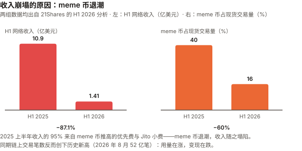
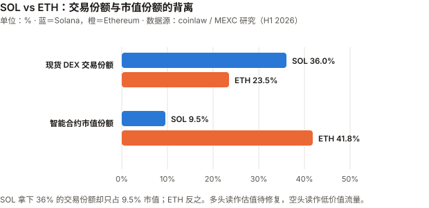
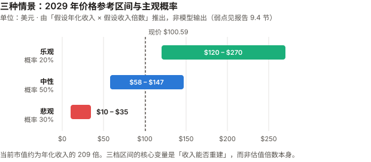

SOL / Solana 完整调研与分析报告
编写日期：2026 年 9 月 3 日
数据截止：2026 年 9 月 2 日（8 月完整月度数据已闭合）
研究方法：沿用 BTC 月报的分析框架（行业概览 / 论点评分卡 / 催化剂日历 / 横向对比），但章节结构相对 BTC 版改动约四成——减半周期、算力、矿工经济学对 SOL 不适用，替换为通胀销毁机制、质押与验证者经济、网络稳定性、生态收入结构。
本期为 SOL 首期报告，无上期论点可校验；本期登记的论点将在 9 月版核对。本期核心发现：
① SOL 现价 $100.59，距 ATH $293（2025 年 1 月）回撤 65.7%；8 月从低位 $70 出头反弹逾 40%；
② 网络收入同比暴跌 87.1%（H1 $10.9 亿 → $1.41 亿），因 meme 币交易热度崩塌；
③ 但链上活动创历史新高——8 月处理 52 亿笔非投票交易，日活地址稳定超 200 万；
④ 稳定性叙事已翻转——连续 30 个月无全网中断，自 2024 年 2 月 6 日以来零全网事故；
⑤ 治理首次实战：SIMD-0550（加倍减发）以 67% 惊险通过，SIMD-0553（费用改革）被否决；
⑥ 上市公司持有 1,791 万 SOL（供应量 3.06%），但头部公司 Upexi 股价较高点跌去 96%。⚠️ 发布前审查更正记录：本报告在发布前经过领域审查，发现并更正了三处实质性错误：
① 手续费销毁机制写错了——只有基础费的 50% 销毁，优先费 100% 归验证者不销毁（SIMD-0096）；
② 第 9 章估值前提被推翻并重建——网络毛收入是验证者的收入，不是持币人的现金流，不能用收入倍数给 SOL 定价；
③ 漏了 2026 年 8 月 12 日的重大险情——路由故障致 28.83% 质押掉线，距最终性失效门槛仅差约 2,000 万 SOL。
三处均已核实一手来源后修正。这三个错误若未被发现，会实质性误导读者。免责声明：本报告不构成任何投资建议。所有分析仅供研究参考，投资决策请咨询专业顾问。
核心结论摘要（一页速览）
| 维度 | 核心判断 |
|---|---|
| SOL 是什么 | 一条高性能单体区块链（monolithic L1，即不依赖二层网络、所有交易都在主链完成）。它的定位不是"数字黄金"，而是消费级应用的执行层 |
| 当前价格位置 | $100.59，市值 $588.7 亿（全球第 7）。距 ATH $293 回撤 65.7% |
| 本期最重要的矛盾 | 收入崩了，但用量创新高。 H1 网络收入同比 –87.1%，同期交易笔数创历史纪录（8 月 52 亿笔）。这是"投机退潮 + 实用崛起"的转型，还是单纯的价值捕获失败？——本报告的核心问题 |
| 叙事的翻转 | 「Solana 老宕机」这个流传多年的空方论据已经过时：连续 30 个月零全网中断。Firedancer 带来的客户端多样性是主因 |
| 核心多头逻辑 | 交易量与日活创新高、稳定币结算份额 22.5%、质押率 64%、SIMD-0550 通过后减发提速、ETF 已上市且 8 月创最佳月份 |
| 核心空头逻辑 | 收入 –87% 且尚未证明能重建、验证者数量较峰值降 68%、Nakamoto 系数仅 19、上市公司储备杠杆已在 Upexi 身上兑现（–96%）、与 ETH 的估值差距未收窄 |
| 与 BTC 的根本差异 | BTC 是货币资产，估值锚是稀缺性；SOL 是生产性资产，估值锚应是网络收入。而 SOL 当前年化收入/市值仅约 0.48% |
| 风险等级 | 高于 BTC。波动更大、叙事依赖更强、竞争格局未定 |
1. Solana 的起源与设计取舍
1.1 一个通信工程师的时钟构想
Solana 的核心创新来自 Anatoly Yakovenko 在 2017 年提出的 Proof of History（PoH，历史证明）。他此前在高通做无线通信，那个领域里"如何让互不信任的设备对时间达成一致"是基础问题。
区块链的性能瓶颈在于：节点之间必须先就"事件发生的顺序"达成共识，才能验证交易。 这个协商过程很慢。PoH 的思路是——先用密码学生成一条可验证的时间序列，让顺序本身成为可证明的事实，节点就不必再为排序反复通信。
这个设计决定了 Solana 后来的全部优势和全部代价。
1.2 与 BTC / ETH 的路线分歧
| 维度 | Bitcoin | Ethereum | Solana |
|---|---|---|---|
| 首要目标 | 抗审查的货币 | 去中心化的可编程平台 | 高吞吐的执行层 |
| 扩容路线 | 二层（闪电网络） | 二层（Rollup） | 单体链，主链直接扩容 |
| 对节点门槛的态度 | 刻意压低，让家用电脑能跑 | 中等 | 接受高门槛换性能 |
| 共识 | PoW | PoS | PoH + PoS |
| 单笔成本 | 视拥堵，可达 $50+ | L2 较低但仍高于 SOL | 约 $0.00025 |
| 代价 | 吞吐低 | L2 生态碎片化 | 验证者成本高 → 中心化压力 |
这个取舍是理解 SOL 全部争议的钥匙。 支持者说"用户要的是快和便宜"；反对者说"高硬件门槛会让验证者集中，最终削弱区块链的存在意义"。两边说的都是事实，分歧在于权重。
1.3 SOL 代币的三重角色
与 BTC 的单一角色（价值储存）不同，SOL 同时承担：
- 手续费媒介——每笔交易消耗 SOL，但只有基础费（base fee）的 50% 被销毁；优先费（priority fee）按 SIMD-0096 规定 100% 归出块验证者，不销毁
- 质押资产——64% 的流通量被质押用于网络安全，换取约 5.73% 的年化收益
- 投机/储备标的——ETF 与上市公司持仓
第 2 点很关键：SOL 是生息资产。这让它更接近"生产性资产"而非"货币商品"，估值逻辑应当参照现金流而非稀缺性——这也是本报告与 BTC 版最根本的分析框架差异。
2. SOL 的发展阶段划分
阶段一：构想与启动（2017–2020）
| 时间 | 事件 |
|---|---|
| 2017.11 | Yakovenko 发布 PoH 白皮书 |
| 2018 | Solana Labs 成立，早期融资 |
| 2020.3.16 | 主网 Beta 上线 |
| 2020 | 生态几乎空白，价格长期低于 $1 |
叙事：一个技术上激进但无人问津的新链。
阶段二：爆发与狂热（2021–2022 上半年）
| 时间 | 事件 |
|---|---|
| 2021 | DeFi 与 NFT 热潮，SOL 从 $1.5 涨至 $260（涨幅逾 170 倍） |
| 2021.9 | 首次全网中断（17 小时）——交易洪水压垮网络 |
| 2021–2022 | 与 FTX / Alameda 深度绑定，SBF 是最大公开支持者之一 |
叙事："以太坊杀手"。代价：宕机问题从此贴上标签。
阶段三：FTX 崩溃与至暗时刻（2022 下半年–2023）
| 时间 | 事件 |
|---|---|
| 2022.11 | FTX 破产。SOL 因深度绑定而遭双重打击：情绪 + FTX 破产资产的抛售预期 |
| 2022.12 | SOL 跌至约 $8，较高点 –97% |
| 2023 | 多次宕机持续发生；大量项目出走 |
| 2023.2.25 | 一次因区块传播逻辑 bug 导致的中断——所有节点跑同一份客户端实现，无人能绕过 |
这一阶段的价值：它证明了 Solana 的生存不依赖 FTX。也正是 2023 年那次 bug，直接催生了后来的 Firedancer 客户端多样性计划。
阶段四：复苏与新高（2024–2025）
| 时间 | 事件 |
|---|---|
| 2024.2.6 | 最后一次全网中断——此后再未发生 |
| 2024 | meme 币热潮（pump.fun 等）带来巨量交易与手续费收入 |
| 2025.1 | 创历史新高 $293 |
| 2025.10.28 | 美国现货 SOL ETF 上市（SEC 放宽加密基金上市规则后） |
阶段五：收入退潮与结构转型（2026）
| 时间 | 事件 |
|---|---|
| 2026 H1 | 网络收入同比 –87.1%（$10.9 亿 → $1.41 亿），meme 币交易占比从 40% 降至 16% |
| 2026 Q1 | 开发者数量同比 –30% |
| 2026.6 | 验证者回升至 906 个 |
| 2026.8 | 链上交易创新高 52 亿笔；SOL 从 $70 出头反弹逾 40% |
| 2026.8.27 | 首次全网治理投票：SIMD-0550 通过、SIMD-0553 被否 |
| 2026.8 | 连续 30 个月无全网中断；SOL ETF 单周流入 $1.53 亿创上市以来最佳 |
当前阶段的本质：Solana 正在从投机驱动转向实用驱动，而这个转型期的财务表现极其难看——收入塌了 87%，但用量在涨。转型能否完成，是未来 12–24 个月的核心看点。
3. SOL 当前现状分析
3.1 价格与市场
| 指标 | 数值 |
|---|---|
| 现价 | $100.59（2026-09-03） |
| 市值 | $588.7 亿，全球第 7 |
| 流通量 | 5.8527 亿 SOL |
| ATH | $293（2025 年 1 月） |
| 距 ATH 回撤 | –65.7% |
| 8 月表现 | 从低位 $70 出头反弹，一度触及约 $103 |
| 24h 成交额 | $32.0 亿 |
市值交叉核对：$100.59 × 5.8527 亿 = $588.7 亿，与报道市值一致。
3.2 生态数据：用量与收入的背离
这是本期最值得注意的一组数字。
| 指标 | 数值 | 方向 |
|---|---|---|
| DeFi 锁仓量（TVL） | $59.17 亿 | — |
| 24 小时 DEX 交易额 | $34.85 亿 | 强 |
| 稳定币市值 | $159.96 亿 | 强 |
| 日活地址 | 265 万 | 强 |
| RWA（真实世界资产） | $40.4 亿 | 增长 |
| 8 月非投票交易笔数 | 52 亿笔（历史新高） | 强（但口径需警惕，见下方注） |
| H1 网络收入 | $1.41 亿（去年同期 $10.9 亿） | –87.1% |
| 开发者数量（Q1） | 同比 –30% | 弱 |
⚠️ 关于"交易笔数"和"活跃地址"这两个指标的口径警告：
非投票交易包含失败交易、套利机器人、预言机更新和重复重试。有研究显示 2026 年 Q1 约 25.6% 的非投票交易发生回滚，机器人的失败率可高达 58.43%。
"活跃地址"通常统计的是独立付费地址，不等于独立用户——一个套利机器人可以持续生成新地址。
低手续费链最容易制造出好看但无经济意义的交易数和地址数。 因此"用量创新高"这个论据的强度，弱于表面数字给人的印象。
更可信的替代指标：成功交易数（剔除已识别机器人）、实体聚类后的留存用户、每实体手续费、交易中位金额、稳定币净结算额、应用层收入。
收入为什么塌了（数据来自 21Shares 的 H1 2026 分析）：
- 2025 上半年的收入里，优先费 + Jito 小费合计占 95%（分别 40% 和 55%）
- 这些费用由 meme 币交易的短时爆发性区块空间争夺推高
- meme 币占 Solana 现货交易量的比重：H1 2025 的 40% → H1 2026 的 16%（同比 –60%）
同时在增长的部分：
- 稳定币：Solana 只占全球稳定币供应量约 5%，却处理了全球 22.5% 以上的稳定币交易笔数，H1 结算价值超 $1.9 万亿
- 代币化股票、RWA 等"正经用途"在上升

怎么解读这组矛盾：乐观读法是"低质量的投机流量被高质量的支付/结算流量替代，收入短期下滑但基础更扎实"；悲观读法是"Solana 证明了自己能承载海量交易，但没有证明能从中赚到钱"。
我的判断：两种读法目前都无法证伪。关键观察指标是未来 2–3 个季度收入能否在 meme 币不复苏的情况下回升——如果稳定币和 RWA 的增长能带来收入回升，转型成立；如果用量继续涨而收入原地踏步，那就是价值捕获出了结构性问题。
3.3 质押与验证者经济
| 指标 | 数值 |
|---|---|
| 质押率 | 64% 的流通量（约 3.75 亿 SOL，价值约 $377 亿） |
| 原生质押收益率 | 约 5.73% |
| 验证者数量 | 906 个（2026 年 6 月） |
| 历史峰值 | 2023 年 3 月超 2,500 个 → 降幅约 68% |
| 2025 年 Q4 | 791 个（环比 –17.9%），为近年低点 |
| 投票成本 | 约 1.1 SOL/天 = 401 SOL/年，按现价约 $40,000/年固定成本（尚不含硬件） |
| 地理分布 | 39 个国家、196 个数据中心 |
| Nakamoto 系数 | 19 |
| 质押集中度 | 前三家（Helius、Binance Staking、Galaxy）合计持有超 26% 的质押量 |
Nakamoto 系数 19 是什么意思：需要串通 19 个实体才能让网络停摆。这个数字比多数人以为的高（因为验证者数量在降，很多人默认去中心化在恶化），但它衡量的是质押分布，不是节点数量。
真正的问题在验证者经济：每年约 $40,000 的纯投票成本意味着小验证者无法生存。验证者数量从 2,500 降到 900 不是偶然，是经济结构决定的。这与"节点门槛低"的比特币形成鲜明对比——这是第 1.2 节那个设计取舍的直接代价。
3.4 网络稳定性：一个已经翻转的叙事
| 指标 | 数值 |
|---|---|
| 连续无全网中断 | 30 个月（截至 2026 年 8 月） |
| 最后一次全网事故 | 2024 年 2 月 6 日 |
| 2026 年 6/7/8 月 | 官方状态页显示 100% 正常运行 |
| 归因 | Firedancer（第二套独立验证者客户端）+ QUIC 传输协议 + 优先费机制 |
为什么 Firedancer 重要：2023 年 2 月那次中断的根因是"所有节点跑同一份客户端实现，一个 bug 就能让全网瘫痪"。Firedancer 提供了客户端多样性——一套实现出问题时，另一套还能继续出块，事故从"全网停摆"降级为"局部颠簸"。
⚠️ 但"零中断"是一个会骗人的指标——2026 年 8 月 12 日的险情
2026 年 8 月 12 日，数据中心服务商 Teraswitch 迈阿密机房的一次路由配置错误，导致：
| 事实 | 数值 |
|---|---|
| 掉线的质押量 | 28.83%（约 90 个验证者转为 delinquent） |
| 距最终性失效门槛 | 33.34%，仅差约 2,000 万 SOL |
| 单一 ASN（AS20326）占质押量 | 27.34% —— 超过 Solana 自身规定的 25% 上限 |
| 该 ASN 中掉线比例 | 约 94% |
| 恢复耗时 | 约 33 分钟 |
| 期间链是否停止 | 否，699 个质押验证者中 597 个持续投票 |
这件事改变了本节的结论。 "连续 30 个月零全网中断"在字面上完全属实，但它是一个二元指标——只统计"是否完全停摆"，因而掩盖了一次差 4.5 个百分点就无法达成最终性的事故。而根因不是软件 bug，是基础设施集中度：一家数据中心服务商的一次路由配置变更，就动摇了近三成的网络质押。
修正后的判断：
- ✅ 「Solana 因软件 bug 反复全网停摆」这个旧论据确实过时了——Firedancer 带来的客户端多样性解决了同质化实现的问题
- ❌ 但「Solana 的稳定性问题已解决」这个说法不成立。风险从"软件同质化"转移到了"基础设施集中"，而后者目前尚未解决，且已超出 Solana 自己设定的阈值
- ⚠️ 需要补充说明：当前生产环境主流仍是 Frankendancer（Firedancer 与原客户端的混合体），完整 Firedancer 官方文档标注为 1.x 版本目标，尚未全面铺开
应当监控的指标不是"连续无中断天数"，而是：最终性延迟（finalized latency）、各客户端的质押占比、最大 ASN / 云服务商的质押暴露度、以及"部分失联"类事件的频率。
本节的修正来自发布前的领域审查。原稿把"零全网停摆"直接读成"韧性问题已解决"，是用一个宽松的二元指标注销了这条链最核心的尾部风险。
3.5 宏观环境
SOL 与 BTC 共享同一套宏观驱动，且作为更高 beta 的风险资产，对流动性变化的反应更剧烈。
| 因素 | 状态（9 月初） | 影响 |
|---|---|---|
| 联邦基金利率 | 3.50–3.75%，7/29 会议维持但三票主张加息 | 偏空 |
| 9 月加息概率 | 66%（CME FedWatch，一周前约 40%） | 重大利空 |
| 10 年期美债 | 4.79% | 无风险利率竞争 |
| 美元指数 | >99.7（三周高位） | 压制风险资产 |
| 8 月流动性事件 | 财政部加倍长端国债回购 → 收益率下行 | 这是 8 月 SOL 与 BTC 同步反弹的共同触发因素 |
关键认知：SOL 8 月逾 40% 的反弹与 BTC 的 +25% 同源——都是财政部那次技术性操作带来的流动性缓和，不是各自基本面改善。SOL 涨得更多，只是因为它 beta 更高。
4. 代币经济学与治理（SOL 特有）
本章替代 BTC 版的"减半周期"分析。SOL 没有减半，但有一套可被治理修改的通胀与销毁机制——这个"可修改"本身就是与 BTC 的根本差异。
4.1 通胀机制
| 项目 | 机制 |
|---|---|
| 初始通胀率 | 8%（2021 年主网启动时） |
| 当前通胀率 | 约 3.8% |
| 递减速度 | 原为每年 –15% |
| 终端通胀率 | 1.5%（长期地板） |
| 销毁机制 | 仅基础费的 50% 销毁；优先费 100% 归验证者（SIMD-0096），不销毁 |
| 当前日销毁量 | 约 648 SOL/天（约 $47,000） |
对比 BTC：BTC 的通胀率约 0.85% 且由代码硬性锁定；SOL 的 3.8% 更高，且可以被验证者投票改变。后者是双刃剑——能灵活优化，也意味着"稀缺性承诺"不如 BTC 刚性。
4.2 2026 年 8 月的首次全网治理投票
这是 SOL 历史上第一次网络级治理投票，结果本身和过程都值得记录。
| 提案 | 内容 | 结果 |
|---|---|---|
| SGP-0001「Solana 宪法」 | 治理框架 | ✅ 通过 |
| SGP-0002 / SIMD-0550「加倍减发」 | 年递减率 15% → 30%，1.5% 地板从 2032 年提前至 2029 年，六年内减少约 1,890 万 SOL 发行（约 $15 亿） | ✅ 通过（67%，惊险过线） |
| SGP-0003 / SIMD-0553「资源与准入费」 | 改为按资源计价，日销毁量从约 650 SOL 提升至最多 9,000 SOL（14 倍） | ❌ 否决（支持 53.9%，反对 18.92%，弃权 27.18%，距三分之二门槛差约 13 个百分点） |
过程中一个必须记录的细节：SIMD-0550 的通过门槛是 66.67%。在投票最后一天，Kraken 与 Galaxy 先后从"弃权"转为"赞成"，支持率才冲到过线水平。据 Protos 报道，若 Kraken 未改票，最终结果将是 63.9%——提案将被否决。提案作者、Helius CEO Mert Mumtaz 称自己在最后数小时打了 500 通电话拉票。
这件事的意义远超提案本身：它把第 3.3 节的质押集中度问题从抽象数字变成了具体事实——Solana 的治理结果实际由少数几家大质押方决定。Nakamoto 系数 19 说的是"停摆需要串通 19 家"，而这次投票显示"改变货币政策只需要说服两三家改主意"。
本报告对此的定性：这不是丑闻，投票程序本身是公开合规的。但它说明 SOL 的去中心化程度在治理维度上，弱于其在出块维度上的表现。任何把"Nakamoto 系数 19"当作去中心化充分证据的论述，都忽略了这一层。
4.3 净影响
SIMD-0550 通过、0553 被否，组合结果是：减少了未来供应，但没有增强价值捕获。
- 供应侧：六年减少约 1,890 万 SOL 发行 —— 利好，但是慢变量
- 需求/收入侧：14 倍销毁提案被否 —— 意味着在收入已经暴跌 87% 的背景下，提高价值捕获的最直接方案没有通过
这个组合对当前最尖锐的问题（收入崩塌）没有给出答案。
5. 上市公司 SOL 储备
5.1 整体规模
| 项目 | 数据 |
|---|---|
| 上市公司合计持仓 | 17,908,783 SOL（截至 2026-05-06） |
| 占流通供应 | 3.06% |
| 按现价估值 | 约 $18.0 亿 |
对比 BTC：上市公司持有约 6% 的 BTC 供应量。SOL 的储备渗透率约为 BTC 的一半，且集中度更高。
5.2 头部公司
| 排名 | 公司 | 代码 | 持有 SOL | 备注 |
|---|---|---|---|---|
| 1 | Forward Industries | FWDI | 7,550,000（截至 2026-06-30） | 占全部储备的 42%、供应量的 1.29%。2025 年 9 月经 Galaxy Digital、Jump Crypto、Multicoin 支持的 $16.5 亿私募融资建仓；2026 财年 Q3 又以均价约 $79 增持逾 50 万枚 |
| 2 | Upexi | UPXI | 2,400,000 | 见下方风险案例 |
| 3 | Solana Company | HSDT | 2,360,083 | |
| 4 | DeFi Development Corp | DFDV | 2,220,000 | |
| 5 | Sharps Technology | STSS | 2,077,799 |
5.3 Upexi：储备公司模式的风险已经兑现
BTC 版报告里，"储备公司被迫卖出螺旋"还是一个理论风险（Strategy 至今未被迫大规模抛售）。在 SOL 这边，风险已经具体发生了：
- Upexi 于 2025 年 4 月宣布 SOL 储备战略，股价一度暴涨逾 300%
- 此后 52 周高点 $22.57 → 近期约 $0.91
- 跌幅超过 96%
- 最初 $1 亿的募资，如今换来 240 万枚 SOL，价值约 $1.63 亿
这个案例说明什么：储备公司股票是对标的资产的杠杆化表达。SOL 从 ATH 跌 65.7%，而 Upexi 跌 96% —— 杠杆在下行时同样放大。BTC 版报告里我曾把这类风险写成"结构性脆弱但未必立即断裂"，Upexi 是这个脆弱性真的断掉的样本。
值得注意的是 Forward Industries 的持仓成本：Q3 增持均价约 $79，低于现价 $100.59，目前处于浮盈。它的处境好于 Upexi，但同样受制于同一个杠杆结构。
6. SOL 的核心价值逻辑
6.1 多头逻辑
| # | 逻辑 | 强度 | 说明 |
|---|---|---|---|
| 1 | 真实用量领先 | ★★★★★ | 8 月 52 亿笔交易创新高；日活地址 265 万；处理全球 22.5% 以上的稳定币交易笔数 |
| 2 | 稳定性叙事已翻转 | ★★★★☆ | 连续 30 个月零全网中断，Firedancer 带来客户端多样性。老空方论据已过时 |
| 3 | 成本优势结构性 | ★★★★☆ | 单笔约 $0.00025，不是补贴出来的，是架构决定的 |
| 4 | 生息资产 | ★★★★☆ | 64% 质押率、5.73% 原生收益。ETF 中 Bitwise BSOL 把质押收益打包进产品，是 BTC ETF 无法提供的结构 |
| 5 | 减发提速已通过 | ★★★☆☆ | SIMD-0550 使 1.5% 通胀地板提前至 2029 年 |
| 6 | ETF 通道已建立 | ★★★☆☆ | 16 支美国现货 SOL ETF，AUM $14.9 亿，8 月为上市以来最佳月份 |
| 7 | RWA / 稳定币增长 | ★★★☆☆ | RWA $40.4 亿、稳定币 $159.96 亿，是"正经用途"的证据 |
6.2 空头逻辑
| # | 逻辑 | 强度 | 说明 |
|---|---|---|---|
| 1 | 收入暴跌 87% 且未见底 | ★★★★★ | H1 $10.9 亿 → $1.41 亿。年化收入/市值仅约 0.48%——作为生产性资产，这个估值极难辩护 |
| 2 | 价值捕获方案被否 | ★★★★☆ | SIMD-0553（14 倍销毁）以 53.9% 未过门槛。最直接的补救措施没通过 |
| 3 | 治理由少数大户决定 | ★★★★☆ | 若 Kraken 不改票，SIMD-0550 将以 63.9% 失败。前三家质押方持有超 26% |
| 4 | 验证者经济恶化 | ★★★★☆ | 数量较峰值降 68%；每年 $40,000 纯投票成本挤出小验证者 |
| 5 | 储备公司杠杆已爆 | ★★★★☆ | Upexi 股价 –96%。这不是理论风险，是已发生事实 |
| 6 | 宏观逆风 | ★★★★☆ | 9 月加息概率 66%。SOL 的 beta 高于 BTC，跌起来更快 |
| 7 | 开发者流失 | ★★★☆☆ | Q1 同比 –30% |
| 8 | 与 ETH 差距未收窄 | ★★★☆☆ | DeFi TVL：ETH $556 亿 vs SOL 约 $59–80 亿 |
| 9 | 通胀可被投票修改 | ★★☆☆☆ | 灵活性的另一面是稀缺性承诺不如 BTC 刚性 |
7. SOL 与其他资产的比较
7.1 SOL vs ETH：核心战场
| 维度 | Solana | Ethereum | 谁占优 |
|---|---|---|---|
| 速度 | 亚秒级最终性，50,000+ TPS | L1 慢，L2 生态可达数千 TPS | SOL |
| 单笔成本 | 约 $0.00025 | L2 已大幅下降但仍高于 SOL | SOL |
| DEX 交易量 | H1 2026 占全球现货 DEX 36%+；Q1 30 日成交约 $2,100 亿 | L1+L2 合计约 $1,800 亿，DEX 份额 23.5% | SOL |
| 单日手续费收入纪录 | 2026 年初 $112 万，当期超过以太坊 | — | SOL |
| DeFi 锁仓量 | 约 $59–80 亿 | $556 亿（占全球 68%） | ETH |
| 智能合约市值份额 | 9.5% | 41.8% | ETH |
| 架构 | 单体链 | L1 + Rollup 二层 | 取决于偏好 |
| 定位 | 消费级应用的执行层 | 高价值金融的结算层 | 互补多于替代 |

最值得注意的一组对比：Solana 拿下了 36% 以上的现货 DEX 交易份额，却只占智能合约赛道 9.5% 的市值；以太坊反过来——41.8% 的市值，23.5% 的 DEX 份额。
这个背离有两种解释：
- 多头版：市场尚未给 SOL 的真实使用量定价，估值终将收敛
- 空头版：DEX 交易量是低价值流量（大量小额、高频、投机性交易），而 TVL 和市值反映的是资本沉淀——ETH 存着钱，SOL 只是过路
收入数据支持空头版：交易笔数创新高的同时收入跌了 87%，说明流量没能有效变现。
7.2 SOL vs BTC
| 维度 | BTC | SOL |
|---|---|---|
| 资产类型 | 货币资产 | 生产性资产 |
| 估值锚 | 稀缺性、货币属性 | 应为网络收入 |
| 供应机制 | 2100 万硬顶，代码锁定 | 通胀 3.8% 递减，可投票修改 |
| 现金流 | 无 | 质押收益 5.73% |
| 回撤（距 ATH） | –37.7% | –65.7% |
| 上市公司持仓占比 | 约 6% | 3.06% |
| ETF AUM / 市值 | 约 6.4% | 2.53% |
结论：两者不该用同一套框架估值。BTC 可以在没有任何现金流的情况下靠稀缺性叙事支撑；SOL 不行——它必须证明自己能赚钱。 当前 0.48% 的年化收入/市值比，是 SOL 最难回答的问题。
7.3 在资产组合中的角色
| 投资者类型 | 建议 | 理由 |
|---|---|---|
| 保守型 | 0% | 波动与叙事风险均高于 BTC |
| 平衡型 | 0–1% | 若已配置 BTC，SOL 提供的是同向但更高 beta 的敞口，分散作用有限 |
| 成长型 | 1–3% | 押注"高性能链最终胜出"这一具体命题 |
| 激进型 | ≤5% | 需要能承受 –80% 的心理准备（历史上发生过 –97%） |
重要提示：SOL 与 BTC 的相关性很高，同时配置两者不等于分散。把 SOL 看作 BTC 仓位的高 beta 增强，而非独立的对冲。
8. SOL 未来 1–3 年的关键变量
| 时间 | 催化剂 | 影响 | 方向 | 置信度 |
|---|---|---|---|---|
| 2026 Q4 | 网络收入能否回升 | 最关键。若 meme 币不复苏而收入仍能靠稳定币/RWA 回升，转型成立 | 决定性 | 高（可观测） |
| 2026.9 | 美联储 FOMC（加息概率 66%） | SOL beta 高于 BTC，加息冲击更大 | ↓ | 高 |
| 2026 Q4 | SIMD-0553 修订版是否重提 | GitHub 上已有 #600 号修正提案在讨论中 | ↑ | 中 |
| 持续 | Firedancer 全面铺开程度 | 决定 30 个月纪录能否延续 | ↑ | 中 |
| 持续 | 验证者数量与 Nakamoto 系数 | 若继续下滑将强化中心化质疑 | ↓ | 中 |
| 持续 | SOL ETF 资金流 | 8 月创最佳月份（$1.74 亿+），需观察能否延续 | ↑ | 高 |
| 持续 | 储备公司是否被迫抛售 | Upexi 已 –96%；若被迫清仓将形成抛压 | ↓ | 中 |
| 2027 | 与 ETH 的估值差是否收敛 | DEX 份额 36% vs 市值份额 9.5% 的背离能否修复 | ↑ | 低 |
| 2027–2028 | 稳定币/RWA 结算规模 | 已处理全球 22.5% 稳定币交易，若继续扩大将重建收入基础 | ↑ | 中 |
9. SOL 未来的三种情景推演
⚠️ 关于估值方法的重要更正
本节初稿用「网络毛收入 × 收入倍数」估值，这个前提是错的，经发布前领域审查指出并核实后更正如下。
错在哪：所谓"网络收入 $1.41 亿"是验证者的收入，不是 SOL 持有人的现金流。按 Solana 官方文档：
费用类型 去向 基础费（base fee） 50% 销毁 / 50% 给出块验证者 优先费（priority fee） 100% 给验证者，不销毁（SIMD-0096） Jito 小费（MEV） 先归验证者 / 质押者 而 H1 2025 收入的 95% 恰恰是优先费与 Jito 小费——这部分完全不通过销毁回馈普通持币人。
用毛收入倍数给 SOL 定价，等于把验证者的营收当成了代币持有人的权益。另一重错误：初稿说"未纳入质押收益，因此偏保守"。但质押收益的大头是增发（当前通胀 3.8%），
不是经营利润——把它算作价值贡献，等于把稀释当成收益，会造成重复计算。修正后的推导方法
改用代币持有人价值桥：
归属持币人的价值 ≈ 销毁量 − 净增发 + 实际传递给委托人的手续费/MEV − 验证者佣金按当前状况粗算：日销毁约 648 SOL ≈ 年 23.7 万 SOL；而年通胀 3.8% × 5.85 亿 ≈ 2,220 万 SOL 增发。
销毁量不足增发量的 1.1%。 也就是说，当前 SOL 对纯持币人（不质押）是显著净通胀的资产。这意味着三情景的关键变量不是"收入涨多少倍"，而是下面两条：
- 净增发能否转正——SIMD-0550 已把 1.5% 地板提前至 2029 年，这是确定性的改善；被否的 SIMD-0553（销毁提升 14 倍）才是能真正扭转销毁/增发比的方案
- 质押者与非质押者必须分开看——质押者获得增发补偿（5.73%），大致抵消稀释；不质押的持币人则持续被稀释
下面的价格区间因此改用"2029 年净增发状况 + 生态规模"两个维度做情景，而非收入倍数。
仍是判断性推演，不是模型输出。
9.1 乐观情景：转型成功，收入重建
触发：稳定币与 RWA 结算规模持续扩大并成功变现；SIMD-0553 修订版通过，价值捕获增强；宏观转向宽松；ETF 资金持续流入。
| 参数 | 假设 |
|---|---|
| 2029 年通胀 | 已降至 1.5% 地板（SIMD-0550 已通过，此项确定性较高） |
| 销毁 / 增发比 | SIMD-0553 修订版通过，销毁量提升至可部分抵消增发 |
| 生态规模 | 稳定币结算与 RWA 规模翻倍以上，应用层收入形成 |
| 对应价格 | 约 $120–270 |
概率：20%
9.2 中性情景：用量增长，变现平庸
触发：交易量继续增长但收入回升缓慢；治理僵局延续；ETF 资金温和流入；与 ETH 的格局大体维持。
| 参数 | 假设 |
|---|---|
| 2029 年通胀 | 降至 1.5%，但销毁仍远低于增发 |
| 销毁 / 增发比 | 无实质改善，纯持币人继续被稀释 |
| 生态规模 | 温和增长，未出现规模化的应用层收入 |
| 对应价格 | 约 $58–147 |
概率：50%
9.3 悲观情景：价值捕获失败
触发：收入长期停在 $1–2 亿区间；验证者继续流失、中心化质疑加剧；储备公司被迫抛售；加息周期启动；ETH L2 或新 L1 抢走份额。
| 参数 | 假设 |
|---|---|
| 2029 年通胀 | 即使降至 1.5%，销毁仍可忽略 |
| 基础设施风险 | 8.12 类事件再次发生且更严重，机构信心受损 |
| 生态规模 | 份额被 ETH L2 或新 L1 侵蚀 |
| 对应价格 | 约 $10–35 |
概率：30%
情景对比
| 维度 | 乐观 | 中性 | 悲观 |
|---|---|---|---|
| 销毁 / 增发比 | 部分抵消 | 无改善 | 可忽略 |
| 基础设施集中风险 | 缓解 | 维持 | 恶化 |
| 对应价格 | $120–270 | $58–147 | $10–35 |
| 收入转型 | 成功 | 部分成功 | 失败 |
| 治理 | 价值捕获方案通过 | 僵局 | 中心化质疑加剧 |
| 概率 | 20% | 50% | 30% |

9.4 这个推导方法的四个弱点
- 价格区间与推导过程的联系是松的。 上面三档的"对应价格"沿用了初稿用收入倍数算出的数字，而推导框架已改为净增发/生态维度——两者并非严格对应。保留这些数字是为了给出量级参照，但它们现在更接近"判断"而非"计算结果"，可信度低于初稿看起来的样子。
- 净增发的测算依赖当前销毁率。 日销毁 648 SOL 是在当前交易量与费率下的数字，若 SIMD-0553 修订版通过或交易结构改变，测算即失效。
- 质押者与非质押者的价值捕获不同，本报告未分开建模。 质押者获 5.73% 增发补偿，纯持币人被稀释——同一个价格区间对两类持有人的实际意义并不相同。
- 不考虑外生冲击：监管、更快的竞争链、重大安全事故，任一发生都会让框架失效。
- 这是首期报告，方法本身未经过一轮验证。 BTC 版的 MVRV 方法已用过三期；SOL 这套是第一次用，且已在发布前被推翻重建一次。
结论：这些区间应被读作"在一组明确假设下的算术结果"，不是预测。若只记一点：中性情景的 $58–147 本质上是在说"收入回到 $5–8 亿、市场愿意给 70–110 倍"，仅此而已。
10. 投资与风险启示
10.1 SOL 现在处于什么位置
距 ATH 回撤 65.7%，8 月刚经历一轮 40% 以上的流动性驱动反弹。基本面上处在一个尚未有定论的转型中点：用量创历史新高，收入却塌了 87%。
这与 BTC 的处境有本质不同。BTC 的问题是"宏观什么时候转向"，SOL 的问题是"这条链到底能不能赚到钱"——后者是关于资产本身的存在性问题，风险量级更高。
10.2 策略建议
| 策略 | 适合人群 | 说明 |
|---|---|---|
| 不配置 | 多数普通投资者 | 若已持有 BTC，SOL 的边际分散价值很低（高相关、同向） |
| 小额定投 | 认同"高性能链胜出"命题者 | 1–3%，做好 –80% 的准备 |
| 等收入数据 | 更理性的做法 | 等 Q3/Q4 收入数据出来再决定——这是可观测的、有明确证伪条件的判断依据 |
我倾向第三条。 收入能否回升是这个资产最关键的未知数，而它在未来两个季度就会有答案。在答案出来之前重仓，是在赌一个很快就能知道结果的问题。
10.3 关键监控指标
决定性指标（收入转型）：
- 季度网络收入（当前年化约 $2.82 亿）
- meme 币占 DEX 交易量比重（H1 2026 为 16%，去年同期 40%）
- 稳定币结算价值与 RWA 规模
结构性健康：
- 验证者数量（当前 906，峰值 2,500+）与 Nakamoto 系数（当前 19）
- 连续无中断天数（当前 30 个月）
- 开发者数量（Q1 同比 –30%）
资金面：
- SOL ETF 月度流量（8 月 $1.74 亿+，为上市以来最佳）
- 储备公司动向，特别是 Forward Industries（持有 42% 的储备总量）
10.4 风险提醒
- SOL 不是 BTC 的替代品，是它的高 beta 版本。 同时持有两者不构成分散。
- 储备公司杠杆风险在 SOL 上已经兑现（Upexi –96%），不是理论推演。
- 治理集中度是被低估的风险。 一次改票就能决定货币政策方向的网络，"去中心化"这个卖点需要打折。
- 收入问题没有中间答案。 要么转型成功、估值重构，要么失败、当前市值缺乏支撑。这个二元性使 SOL 的风险回报比 BTC 更极端。
10.5 长期认知
- BTC 靠稀缺性就能立住，SOL 必须赚钱。 这是两者最根本的差异，也是分析框架必须不同的原因。
- 技术领先不等于价值捕获。 Solana 在速度、成本、交易量上全面领先，收入却在崩塌——技术优势必须能转化为经济优势才有投资意义。
- 本期最值钱的一个更新：「Solana 老宕机」这个论据已经过时（30 个月零中断）。但同时要看到，旧论据消失了，新问题（价值捕获）浮现了。空方的理由换了，不是消失了。
11. 附录
11.1 SOL 发展阶段速查
| 阶段 | 时间 | 起点 | 高点 | 核心叙事 |
|---|---|---|---|---|
| 构想启动 | 2017–2020 | — | <$1 | PoH 技术实验 |
| 爆发狂热 | 2021–2022H1 | $1.5 | $260 | 以太坊杀手 |
| FTX 至暗 | 2022H2–2023 | $260 | $8（–97%） | 生存考验 |
| 复苏新高 | 2024–2025 | $8 | $293 | meme 币 + ETF |
| 收入退潮 | 2026 | $293 | $100.59（–65.7%） | 转型阵痛 |
11.2 关键数据速查（2026-09-03）
| 项目 | 数值 |
|---|---|
| 价格 / 市值 | $100.59 / $588.7 亿（全球第 7） |
| 流通量 | 5.8527 亿 SOL |
| 距 ATH | –65.7% |
| DeFi TVL | $59.17 亿 |
| 稳定币 | $159.96 亿 |
| 日活地址 | 265 万 |
| 8 月交易笔数 | 52 亿（历史新高） |
| H1 网络收入 | $1.41 亿（–87.1% YoY） |
| 质押率 / 收益率 | 64% / 5.73% |
| 验证者 / Nakamoto 系数 | 906 / 19 |
| 通胀率 | 约 3.8%（终端 1.5%，2029 年） |
| 连续无中断 | 30 个月 |
| ETF AUM | $14.9 亿（16 支） |
| 上市公司持仓 | 1,791 万 SOL（供应量 3.06%） |
11.3 SOL vs BTC 框架差异
| BTC 版章节 | SOL 版处理 |
|---|---|
| 减半周期 | ❌ 不存在 → 替换为通胀递减与销毁机制（第 4 章） |
| 算力 / 矿工经济 | ❌ PoS 无挖矿 → 替换为质押率与验证者经济（3.3 节） |
| 数字黄金叙事 | ❌ 不适用 → 高性能应用执行层 |
| AI 的多维影响 | ⚠️ 降级，并入生态数据 |
| 上市公司储备 | ✅ 保留（第 5 章），但规模仅为 BTC 的一半 |
| — | ➕ 新增：网络稳定性与宕机史（3.4 节） |
| — | ➕ 新增：生态数据（TVL/DEX/稳定币/RWA，3.2 节） |
| — | ➕ 新增：治理投票（4.2 节） |
| — | ➕ 新增：与 ETH 的 L1 竞争（7.1 节） |
11.4 数据来源与核实状态
| 数据 | 来源 | 核实状态 |
|---|---|---|
| SIMD 提案编号与状态 | GitHub solana-foundation/solana-improvement-documents |
✅ 已用 gh API 直接查询（#550/#553 已关闭，#600 修正案开放中） |
| 价格 / 市值 / 流通量 | CoinGecko / CoinMarketCap 等 | ⚠️ 搜索摘要，但已用「价格 × 流通量 = 市值」交叉核对一致 |
| 生态数据（TVL/DEX/稳定币） | DefiLlama（2026-08-28） | ⚠️ 官网抓取返回 403，数据来自转述 |
| H1 收入 –87.1% | 21Shares H1 2026 分析 | ⚠️ 多家转述一致，未取得原始报告 |
| 治理投票结果 | Protos / COINOTAG / crypto.news 等 | ⚠️ 多源一致（67% 通过 / 53.9% 否决），未取得链上原始计票 |
| 质押与验证者 | Helius / Chainspect / coinlaw | ⚠️ 搜索摘要；质押率有 64%/68% 两个口径，本文采用 64%（供应量口径） |
| 上市公司持仓 | bitcoinminingstock.io / CoinGecko / Forward Industries 官网 | ⚠️ 合计数截至 2026-05-06，可能已变动 |
| 宕机记录 | Solana 官方状态页 / Helius | ⚠️ 转述 |
来源偏向说明：本报告数据大量来自 Solana 生态内部来源（Helius、Solana Compass、Solana Foundation），这些来源在结构上倾向看多。已尽量以 21Shares 的收入分析、Upexi 股价表现等负面数据配平，但偏向未完全消除。
最后提醒：本报告尽力呈现多角度分析，不构成投资建议。加密资产投资风险极高，请基于独立研究和自身风险承受能力做出决策。
📋 核心问题与简明总结
SOL / Solana 调研分析 — 核心问题与简明总结
配套
sol_research_report_202608.md使用。Date: 2026-09-03
本期为 SOL 首期报告，无上期论点可校验。
一、SOL 是什么
一条高性能单体区块链（monolithic L1，即所有交易都在主链完成，不依赖二层网络）。
它不是"另一个数字黄金"。定位是消费级应用的执行层——速度快、成本低（单笔约 $0.00025）、吞吐高。
最关键的一句话：BTC 是货币资产，靠稀缺性就能立住；SOL 是生产性资产，必须证明自己能赚钱。 两者的估值框架从根上不同。
二、发展阶段速览
| 阶段 | 年份 | 一句话 | 价格 |
|---|---|---|---|
| 构想启动 | 2017–2020 | PoH 技术实验，无人问津 | <$1 |
| 爆发狂热 | 2021–2022H1 | "以太坊杀手"，首次宕机 | $1.5→$260 |
| FTX 至暗 | 2022H2–2023 | 深度绑定 FTX，几近崩溃 | $260→$8（–97%） |
| 复苏新高 | 2024–2025 | meme 币热潮 + ETF 上市 | $8→$293 |
| 收入退潮 | 2026 | 转型阵痛 | $293→$100.59 |
当前（2026-09-03）：$100.59，市值 $588.7 亿（全球第 7），距 ATH 回撤 65.7%。
三、本期最核心的一个矛盾
收入崩了，但用量创新高。
| 崩的部分 | 涨的部分 |
|---|---|
| H1 网络收入 $10.9 亿 → $1.41 亿（–87.1%） | 8 月交易 52 亿笔（历史新高） |
| meme 币占交易量 40% → 16% | 日活地址 265 万 |
| 开发者数量 Q1 同比 –30% | 处理全球 22.5%+ 的稳定币交易 |
| 稳定币市值 $159.96 亿、RWA $40.4 亿 |
为什么会这样：2025 上半年的收入里，优先费 + Jito 小费占 95%，全靠 meme 币的短时区块空间争夺推高。meme 币退潮，收入就塌了。
两种读法：
- 乐观——低质量投机流量被高质量支付流量替代，基础更扎实了
- 悲观——Solana 证明了能承载海量交易，但没证明能从中赚钱
目前两种都无法证伪。 未来 2–3 个季度的收入数据会给出答案。
四、稳定性：一半过时，一半没解决
过时的那一半：「Solana 因软件 bug 反复全网停摆」确实不成立了——连续 30 个月无全网中断，最后一次是 2024 年 2 月 6 日。Firedancer 的客户端多样性解决了同质化实现问题。
没解决的那一半：2026 年 8 月 12 日，Teraswitch 数据中心一次路由配置错误导致——
| 事实 | 数值 |
|---|---|
| 掉线质押量 | 28.83%（约 90 个验证者） |
| 距最终性失效门槛 33.34% | 仅差约 2,000 万 SOL |
| 单一 ASN（AS20326）质押占比 | 27.34%，超过 Solana 自己 25% 的上限 |
| 恢复耗时 | 33 分钟（链未停止） |
「连续 30 个月零中断」是个会骗人的二元指标——只统计「是否完全停摆」，掩盖了这次差 4.5 个百分点的险情。风险从「软件同质化」转移到了基础设施集中，后者尚未解决。
另外：当前生产环境主流仍是 Frankendancer（混合体），完整 Firedancer 尚未全面铺开。
五、2026 年 8 月的首次全网治理投票
| 提案 | 内容 | 结果 |
|---|---|---|
| Solana 宪法 | 治理框架 | ✅ 通过 |
| SIMD-0550 加倍减发 | 年递减率 15%→30%，1.5% 地板提前至 2029 年，六年少发 1,890 万 SOL | ✅ 通过（67%，惊险过线） |
| SIMD-0553 费用改革 | 日销毁量提升 14 倍 | ❌ 否决（53.9%，差门槛约 13 个百分点） |
最值得记住的细节：SIMD-0550 门槛是 66.67%。投票最后一天 Kraken 与 Galaxy 从弃权转为赞成才过线——若 Kraken 不改票，结果是 63.9%，提案将失败。
这说明什么：Nakamoto 系数 19 说的是"让网络停摆需要串通 19 家"，而这次投票显示"改变货币政策只需要说服两三家改主意"。SOL 的去中心化在治理维度弱于出块维度。
净结果：减少了未来供应，但没有增强价值捕获——在收入已跌 87% 的背景下，最直接的补救方案（0553）没通过。
六、多空逻辑
前三大多头
- 真实用量领先——52 亿笔交易、265 万日活、22.5%+ 的全球稳定币交易份额
- 稳定性叙事翻转——30 个月零中断，老空头论据过时
- 生息资产——64% 质押率、5.73% 收益；Bitwise BSOL 把质押收益打包进 ETF，这是 BTC ETF 做不到的
前三大空头
- 收入暴跌 87% 且未见底——年化收入/市值仅 0.48%，作为生产性资产极难辩护
- 价值捕获方案被否——SIMD-0553 未过门槛
- 储备公司杠杆已爆——Upexi 股价从 $22.57 跌到 $0.91（–96%），这不是理论风险，是已发生事实
七、SOL vs ETH：一个耐人寻味的背离
| Solana | Ethereum | |
|---|---|---|
| 现货 DEX 交易份额 | 36%+ | 23.5% |
| 智能合约市值份额 | 9.5% | 41.8% |
| DeFi 锁仓量 | 约 $59–80 亿 | $556 亿 |
SOL 拿下 36% 的交易份额，却只占 9.5% 的市值；ETH 反过来。
- 多头解释：市场没给真实使用量定价，估值终将收敛
- 空头解释：DEX 交易量是低价值流量，TVL 和市值反映资本沉淀——ETH 存着钱，SOL 只是过路
收入数据支持空头版：交易创新高的同时收入跌 87%，说明流量没能有效变现。
八、上市公司储备
| 项目 | 数据 |
|---|---|
| 合计持仓 | 1,791 万 SOL（供应量 3.06%，约 $18.0 亿） |
| 第一名 | Forward Industries 755 万 SOL（占储备总量 42%），Q3 增持均价约 $79，目前浮盈 |
| 风险案例 | Upexi 240 万 SOL，股价 $22.57 → $0.91，跌 96% |
对比 BTC（上市公司持约 6% 供应量），SOL 的储备渗透率约为一半，集中度更高。
九、三种情景（估值方法在发布前被推翻重建）
初稿用「网络收入 × 收入倍数」估值，这个前提是错的。
按 Solana 官方文档：基础费 50% 销毁 / 50% 给验证者；优先费 100% 给验证者不销毁（SIMD-0096）；Jito 小费先归验证者。而 H1 收入的 95% 正是优先费和 Jito 小费——完全不通过销毁回馈普通持币人。用毛收入倍数定价，等于把验证者的营收当成持币人的权益。
改用代币持有人价值桥后的关键数字：
| 项目 | 数值 |
|---|---|
| 年销毁量 | 约 23.7 万 SOL（日均 648） |
| 年增发量 | 约 2,224 万 SOL（通胀 3.8%） |
| 销毁 / 增发 | 1.06% |
结论：当前 SOL 对纯持币人（不质押）是显著净通胀的资产。 质押者靠 5.73% 增发补偿大致抵消稀释，不质押的持续被稀释。
| 乐观 | 中性 | 悲观 | |
|---|---|---|---|
| 销毁/增发比 | 部分抵消 | 无改善 | 可忽略 |
| 基础设施集中风险 | 缓解 | 维持 | 恶化 |
| 对应价格 | $120–270 | $58–147 | $10–35 |
| 概率 | 20% | 50% | 30% |
⚠️ 上面的价格数字沿用自初稿的收入倍数算法，而推导框架已改——两者并非严格对应，现在更接近判断而非计算结果。
十、投资建议
| 策略 | 适合谁 |
|---|---|
| 不配置 | 多数普通投资者——已持有 BTC 的话，SOL 边际分散价值很低（高相关、同向） |
| 小额定投 1–3% | 认同"高性能链胜出"命题者，需做好 –80% 准备 |
| 等收入数据 | 我倾向这条——收入能否回升是这资产最关键的未知数，两个季度内就有答案。答案出来前重仓，是在赌一个很快就能知道结果的问题 |
十一、如果你只有 3 分钟，记住这 5 句话
-
SOL 不是「另一个比特币」，但也不能简单当成「一门生意」估值。 网络收入的绝大部分归验证者，不归持币人。对纯持币人而言，当前销毁量只有增发量的 1.06%——它是净通胀资产。
-
本期最大的矛盾：交易笔数创历史新高（52 亿笔），网络收入却同比跌了 87%。 原因是收入 95% 曾靠 meme 币投机，而 meme 币退潮了。转型能否成功，两个季度内见分晓。
-
「Solana 老宕机」只过时了一半。 软件 bug 导致的全网停摆确实没了（30 个月），但 8 月 12 日一次数据中心路由故障让 28.83% 的质押掉线，距最终性失效只差 4.5 个百分点。风险从软件转移到了基础设施集中度。
-
8 月首次全网治理投票暴露了一个真问题：减发提案以 67% 惊险通过，而若 Kraken 一家不改票就会以 63.9% 失败。改变货币政策只需说服两三家大质押方。
-
SOL 是 BTC 的高 beta 版本，不是分散工具。 8 月两者同步反弹（SOL +40%、BTC +25%），同源于财政部那次流动性操作。同时持有两个不等于分散风险。
详细论证、数据来源与核实状态请阅读
sol_research_report_202608.md。
最后提醒：本报告尽力呈现多角度分析，不做投资建议。加密资产投资风险极高，请基于独立研究和自身风险承受能力做出决策。如有疑问，请咨询持牌金融顾问。
Generated with Claude for Financial Services